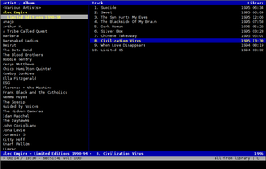

cmus
Dieser Artikel wurde für die folgenden Ubuntu-Versionen getestet:
Ubuntu 16.04 Xenial Xerus
Ubuntu 14.04 Trusty Tahr
Zum Verständnis dieses Artikels sind folgende Seiten hilfreich:
 cmus
cmus  (C* Music Player) ist ein leichtgewichtiger Terminal-Audioplayer, der aus den Programmteilen cmus und cmus-remote besteht. Er ist in C geschrieben, nutzt die freie Programmbibliothek ncurses und ist POSIX-kompatibel.
(C* Music Player) ist ein leichtgewichtiger Terminal-Audioplayer, der aus den Programmteilen cmus und cmus-remote besteht. Er ist in C geschrieben, nutzt die freie Programmbibliothek ncurses und ist POSIX-kompatibel.
cmus verfügt über einen großen Funktionsumfang, der dem vieler GUI-Player nicht nachsteht und ihn teilweise sogar übertrifft: cmus erlaubt u.a. die Wiedergabe lokaler Audiodateien und von Internetradio, unterstützt Wiedergabelisten und ist sehr umfangreich konfigurierbar. Da cmus kaum Ressourcen benötigt und ohne XServer auskommt, ist er sehr gut für ältere Computer geeignet.
cmus unterstützt die unterbrechungsfreie Wiedergabe (Gapless Playback) sowie ReplayGain; unterstützte Audio-Formate sind Ogg-Vorbis, MP3, FLAC, Musepack, WavPack, Wav, AAC, ALAC, WMA, APE, TTA, SHN und MODs.
Installation¶
Folgendes Paket muss installiert [1] werden:
cmus (universe)
 mit apturl
mit apturl
Paketliste zum Kopieren:
sudo apt-get install cmus
sudo aptitude install cmus
Die benötigten Codecs befinden sich in den Abhängigkeiten des Pakets und werden automatisch installiert.
Bedienung¶
 Das installierte Programm wird im Terminal [2] mit dem Befehl cmus gestartet [3]. (Im Homeverzeichnis wird beim ersten Start der versteckte Ordner .cmus angelegt, was einige Zeit in Anspruch nehmen kann.)
Hinweis:
Nach dem Start müssen zunächst Musikdateien in die Bibliothek importiert werden, dann kann das Programm in einer der verschiedenen Ansichten benutzt werden.
Bibliothek einlesen¶
Musikdateien¶
Vor dem Abspielen von Musik müssen zunächst Musikdateien in die Bibliothek von cmus importiert werden. Dazu wechselt man mittels
: auf die Befehlszeile und fügt das Verzeichnis oder die Datei mit dem Befehl add, gefolgt vom entsprechenden Pfad, hinzu:
:add ~/Musik
Je nach Umfang der Musiksammlung kann dies etwas dauern. Nachdem die Sammlung eingelesen wurde, findet man sie sortiert nach Künstler in der linken Bildschirmhälfte. Um die jeweiligen Alben angezeigt zu bekommen, muss man drücken. Auf der rechten Seite werden die im Ordner enthaltenen Musikstücke angezeigt. Mehrere Ansichtsmodi gestatten es, komfortabel zwischen verschiedenen Möglichkeiten der Wiedergabe und den Einstellungen zu wechseln.
Hinweis:
cmus speichert alle Angaben zu den eingelesenen Dateien in einer Cache-Datei (~/.cmus/cache). Um das Programm schlank und schnell zu halten, wird diese Datei nicht kontinuierlich aktualisiert. Dies hat zur Folge, dass cmus nicht erkennt, wenn die Metadaten (Tags) eines Stücks von einem externen Programm (wie EasyTAG) verändert wurden. Damit cmus Änderungen anzeigen kann, muss daher die Bibliothek (mit clear -l) gelöscht, die Cache-Datei mit
U aktualisiert sowie anschließend die Bibliothek neu eingelesen werden.
Radiostreams¶
Radiostreams können ebenfalls eingelesen werden. Sie müssen im Klartext als .m3u oder .pls vorliegen, um sie in cmus wiedergeben zu können. Eingebunden werden sie mittels:
:add STREAMADRESSE
Hinweis:
Es ist möglich, mehrere Stream-Adressen untereinander in einer einfachen Textdatei zu speichern und anschließend alle Streams dieser Liste mit einem einzigen Befehl einzulesen. Bsp. für eine Datei mit dem Namen stream.list: :load /home/USER/.cmus/stream.list
Ansichten¶
Beim Start befindet man sich standardmäßig in der ersten von sieben Ansichten. Der Wechsel zwischen diesen erfolgt über die Tasten 1 bis 7 . Die Ansichten haben folgende Funktionen:
| Ansichtsmodi | ||
| Modus | Fenster | Beschreibung |
| 1 | Bibliothek | Zweispaltige Ansicht: Links werden Künstler und Album dargestellt, rechts deren einzelne Lieder (bzw. Tracks). (Künstler werden alphabetisch, Alben nach dem Erscheinungsjahr sortiert.) |
| 2 | Sortierte Bibliothek | Flache Listenansicht der Lieder mit der Möglichkeit für den Benutzer, die Sortierungskriterien selbst festzulegen |
| 3 | Wiedergabeliste | Anzeige der (editier- und speicherbaren) Wiedergabeliste |
| 4 | Warteliste (Queue) | Anzeige der unmittelbar abzuspielenden Lieder |
| 5 | Datei-Browser | Dateisystemansicht mit der Möglichkeit zum Hinzufügen von Liedern zur Sammlung, der Wiedergabeliste oder Warteliste |
| 6 | Filter | Anzeige benutzerdefinierter Filter |
| 7 | Einstellungen | Einstellungsanzeige und -änderung: D löscht Einstellungen, mit ⏎ können sie modifizierbar gemacht sowie mit die konkreten Variablen geändert werden. Die standardmäßige Konfiguration ist vollständig anpassbar. |
Steuerung¶
cmus wird standardmäßig vollständig über die Tastatur gesteuert. Die Navigation orientiert sich an den Konventionen von Vim, den Fokus kann mal also bspw. einfach mit K nach oben und mit J nach unten bewegen. (Wobei auch die Tasten ↑ und ↓ funktionieren.)
Um in den Ansichten 2, 3 oder 4 mehrere Titel zur Wiedergabeliste bzw. zur Warteliste (Queue) hinzuzufügen, markiert man diese zunächst nacheinander mit der Taste ; sie erscheinen dadurch farblich hervorgehoben.
Direkte Tastaturbefehle¶
Wichtige Befehle sind:
| cmus-Tastenbelegung | |
| Taste(n) | Funktion |
| Wiedergabe: | |
| X | Wiedergabe |
| V | Stop |
| C | Pause |
| B | Nächster Titel |
| Z | Vorheriger Titel |
| + | Lautstärke erhöhen |
| - | Lautstärke verringern |
| → | 5 Sekunden vorspringen |
| ← | 5 Sekunden zurückgehen |
| I | Fokus auf laufenden Titel (in Ansicht 1 und 2) |
| S | Zufallswiedergabe (Shuffle) |
| R | Wiederholung (Repeat) |
| Strg + R | Wiederholung des aktuellen Titels (Repeat current) |
| T | Anzeige der verbleibenden Liedlaufzeit |
| Sonstiges: | |
| 1 bis 7 | Wechsel zwischen den verschiedenen Ansichtsmodi (Wiedergabe, Playlist, Warteliste, …) |
| Alben ein-/ausblenden (Ansicht 1) bzw. Titel auswählen | |
| Tab ⇆ | Wechsel zwischen den Fensterhälften |
| / | Suche nach Künstler, Album oder Titel. Fortsetzung der Suche vorwärts mit N , rückwärts mit ⇧ + N |
| / + / | Suche nur nach Künstler oder Album (Ansicht 1) oder Titel (Ansichten 2–4). Fortsetzung der Suche vorwärts mit N , rückwärts mit ⇧ + N |
| : | Wechsel in die Befehlszeile |
| ⇧ + D | Ausgewählten Titel löschen |
| Y | Ausgewählten Titel in die Wiedergabeliste kopieren |
| E | Ausgewählten Titel in die Warteliste kopieren |
| ⇧ + E | Ausgewählten Titel in die Warteliste kopieren und dort voranstellen |
| P | Ausgewählten Titel in Ansicht 3 oder 4 eine Position nach unten verschieben |
| ⇧ + P | Ausgewählten Titel in Ansicht 3 oder 4 eine Position nach oben verschieben |
| A | In der Browser-Ansicht (5) eine Datei oder ein Verzeichnis in die Bibliothek (1 und 2) kopieren |
| Q , Y | Programm beenden |
Weitere Befehle sind den Manpages zu entnehmen. Die Befehle können beliebig den eigenen Wünschen angepasst werden.
Hinweis:
Befinden sich Audio-Dateien sowohl in der Playlist als auch in der Warteliste (Queue), werden grundsätzlich zunächst die Dateien aus der Warteliste abgespielt, dann erst die der Playlist. Dies gilt auch, wenn man bei laufender Playlist eine Datei in die Warteliste einfügt.
Kommandozeile¶
cmus wird zudem durch Kommandos gesteuert, die im Stil von Vim immer mit einem Doppelpunkt : beginnen. Beispiele dafür sind:
| Kommandos | |
| Befehl | Beschreibung |
:add ~/Musik | Ordner ~/Musik der Bibliothek hinzufügen |
:save -p /home/USER/liste.pls | Aktuelle Playlist in das angegebene Verzeichnis unter dem Namen liste.pls speichern |
:load playlist.pls | Eine Playlist laden |
:clear | Inhalt der aktuellen Ansicht löschen |
:clear -l | Bibliothek löschen |
:add http://live.urn1350.net:8080/urn_high.ogg | Stream http://live.urn1350.net:8080/urn_high.ogg hinzufügen |
:set format_current= | Titelanzeige verändern |
:set output_plugin= | Ausgabeplugin festlegen |
:colorscheme | Farbschema anpassen |
Hinweis:
Jeder Befehl kann mit seinen Anfangsbuchstaben abgekürzt werden, wenn die Abkürzung eindeutig ist, also kein anderer Befehl mit den gleichen Buchstaben startet. Statt :add STREAMADRESSE kann also bspw. kurz :a STREAMADRESSE geschrieben werden.
Zusätzliche Informationen findet man in den Manpages.
Filter¶
cmus erlaubt es, die Bibliothek (Ansichten 1 und 2) nach bestimmten Kriterien zu filtern, so dass nur diejenigen Lieder angezeigt werden, die den Filterkriterien entsprechen.
Syntax¶
Filter können auf die Variablen filename, artist, album, title, genre, discnumber, tracknumber, date [Jahr] und duration [in Sekunden] angewendet werden. Sie können mit & (und) sowie | (oder) kombiniert werden; ein ! schließt den folgenden Ausdruck aus. Vergleichsoperatoren sind <, <=, =, >=, > und !=.
Beispiele: Der Befehl
:filter genre="Alternative"&duration<180
zeigt alle Lieder des Genres „Alternative“ an, die kürzer als 3 Minuten (180 Sekunden) sind. Der Befehl
:filter title="A*"&genre!="Pop"
zeigt alle Lieder an, die mit dem Buchstaben „A“ beginnen und nicht zum Genre „Pop“ gehören.
Filterarten und -aktivierung¶
Filter können temporär oder dauerhaft eingerichtet werden. Temporäre Filter werden mit dem Befehl :filter eingerichtet. Der Befehl
:filter genre="Classical"
zeigt bspw. für die laufende Sitzung (und nur für diese) nur die Lieder des Genres „Classical“ an.
Dauerhafte Filter werden mit dem Befehl fset angelegt. Die so erzeugten dauerhaften Filter können in Ansicht 6 eingesehen werden; angewandt werden sie mit dem Befehl factivate. Beispiel:
:fset flac=filename="*.flac"
erzeugt einen Filter mit dem Namen flac, der bewirkt, dass nur FLAC-Dateien anzeigt werden. Der Befehl:
:factivate flac
wendet diesen Befehl an. Mit dem Befehl:
:factivate !flac
werden nur Dateien angezeigt, die nicht FLAC-Dateien sind.
Dauerhafte Filter können auch aktiviert werden, indem in Ansicht 6 bei Fokus auf dem entsprechenden Filter und anschließend ⏎ gedrückt wird.
Hinweis:
factivate-Befehle können mit einer Tastenkombination verbunden werden, so dass sie durch einen einfachen Tastendruck angewandt werden können.
Mit dem Befehl:
mark FILTERAUSDRUCK
werden Lieder, die dem genannten Filter-Ausdruck entsprechen, markiert. Dies ist bspw. hilfreich, wenn die ausgewählten Lieder anschließend in die Playlist verschoben werden sollen.
Filter deaktivieren¶
Filter können in der Filteransicht (6) deaktiviert werden. Dazu muss in dieser Ansicht der Fokus auf den aktivierten Filter gesetzt werden. Nun kann der Filter durch zweimaliges Drücken der -Taste und anschließendes Betätigen der ⏎ -Taste deaktiviert werden.
Konfiguration¶
Konfigurationsdateien¶
cmus sucht sich seine Konfigurationseinstellungen in drei Dateien:
~/.cmus/autosave: Datei, die cmus selbst anlegt und nach dem Programmstart zuerst ausliest. In ihr werden nach Programmende die aktuellen Einstellungen gespeichert; diese Datei sollte vom Nutzer nicht editiert werden, da sie vom Programm verändert werden kann.
/usr/share/cmus/rc: Datei mit Standardeinstellungen. Sie wird geladen, wenn die Datei autosave nicht existiert.
~/.cmus/rc: Statische Konfigurationsdatei, deren Einstellungen prioritär verwendet werden. Diese Datei (die ggf. manuell angelegt werden muss) sollte bearbeitet werden, wenn benutzerdefinierte Einstellungen dauerhaft vorgenommen werden sollen. (Einen ersten Anhaltspunkt dafür, wie derartige Einstellungen auszusehen haben, bietet die Datei autosave.)
Sound¶
Die Ausgabe ist möglich auf pulse, alsa, oss und ao. Gesetzt werden kann sie (hier für oss) mit:
:set output_plugin=oss
Voreingestellt in cmus ist die Musikausgabe über pulse.
Optik¶
Die Optik des Players ist anpassbar. Mehr dazu findet sich in einem separaten Artikel.
cmus-remote¶
Der Programmteil cmus-remote gestattet es, den Player in einem separaten Terminal-Fenster durch Befehle zu steuern. Dies gestattet auch die Einbindung in Skripte.
Hinweis:
cmus-remote erlaubt es in Kombination mit xbindkeys, cmus über die Multimediatasten der Tastatur zu bedienen. Mit dem Eintrag bind on XF86AudioNext exec cmus-remote -n in der Datei .xbindkeysrc sendet bspw. die Multimediataste „nächstes Lied“ den entsprechendem Befehl an cmus.)
Befehlsoptionen¶
| cmus-remote | |
| Option | Beschreibung |
-p | Wiedergabe |
-u | Pause |
-s | Unterbrechung der Wiedergabe |
-n | Nächster Titel |
-r | Vorheriger Titel |
-R | Wiederholung (Repeat) |
-s | Zufallswiedergabe (Shuffle) |
-v | Lautstärkeänderung (muss von einem Wert gefolgt werden, also z.B.: -v +10) |
-k | Titelsuche |
-l | Bibliothek |
-p | Wiedergabeliste |
-q | Warteliste |
-c | Wiedergabeliste löschen |
-l | Bibliothek löschen |
-q | Warteliste löschen |
Beispiele¶
Eine Wiedergabeliste, Dateien, Ordner oder Internetlinks zur Bibliothek hinzufügen:
cmus-remote -l music.m3u \ http://live.urn1350.net:8080/urn_high.ogg
Löschen der Wiedergabeliste und Hinzufügen neuer Inhalte:
cmus-remote -c music.m3u
Links¶
cmus wiki
(mit Erweiterungen)cmus-devel
– Mailing-List der cmus-Entwicklercmus
auf digipedia.plcmus-remote
auf digipedia.plcmus
auf lofotenmoose.infoAsterik-Musik
 auf michael.stapelberg.de
auf michael.stapelberg.decmus-Artikel in der englischsprachigen Wikipedia
- Erstellt mit Inyoka
-
 2004 – 2017 ubuntuusers.de • Einige Rechte vorbehalten
2004 – 2017 ubuntuusers.de • Einige Rechte vorbehalten
Lizenz • Kontakt • Datenschutz • Impressum • Serverstatus -
Serverhousing gespendet von